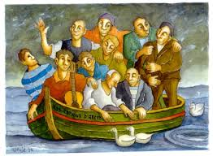

Les copains d'abord
The pals first on board
Georges Brassens (1964)
|
|
|
(1) « Les Copains d'Abord » est dédié à de vieux amis avec qui Brassens faisait autrefois des tournées en mer dans le midi, sur un bateau baptisé Les copains d'abord. Cependant la chanson fut créée pour un film, Les copains (1964), mis en scène par Yves Robert. Lun des traits marquants dans la vie de Brassens fut la solidité de ses amitiés. Dautres chansons en témoignent. (2) Fluctuat nec mergitur signifie "Il flotte, mais ne sombre point". Telle est la devise inscrite sous les armoiries de Paris, dont lemblème, clui des anciens nautes, est un bateau naviguant dans la tempête. (3) ) Étienne de La Boétie (15301563) était un magistrat, écrivain and lun des pères de la pensée politique moderne en France. On se souvient de lui comme de lun des amis intimes du fameux essayiste Michel de Montaigne (1533 1592). Leur amitié fut lune des plus fameuses de lhistoire. Montaigne fut énormément peiné par la mort précoce de La Boétie. (4) Comme pour la plupart des chansons de Brassens sur ce site, ces notes sont tirées du blog de David Yendley (http://dbarf.blogspot.fr/2011/01/). La traduction chantable anglaise est basée sur sa traduction en prose. |
(1) Les Copains d'Abord is dedicated to the close friends who joined Brassens on boating trips off the South coast of France in a boat called Les copains d'abord. However, the song was written for a film, Les copains (1964), directed by Yves Robert. One of the striking features of Brassens life was the enduring friendships that he forged, evident also in his other songs. (2) Fluctuat nec mergitur means "She is tossed by the waves, but is not sunk". This phrase is the motto under of the city coat of arms of Paris, whose emblem a ship is floating on a rough sea. (3) Étienne de La Boétie (15301563) was a French judge, writer, and "a founder of modern political philosophy in France." He "has been best remembered as the great and close friend of the eminent essayist Michel de Montaigne (1533 1592), in one of history's most notable friendships. Montaigne was shattered by La Boéties early death. (4) Like for most of the Brassens songs at this site, these notes are borrowed from David Yendley's blog (http://dbarf.blogspot.fr/2012/05/alphabetical-list-of-my-brassens-songs.html). This singable translation is based on his prose translation. |
